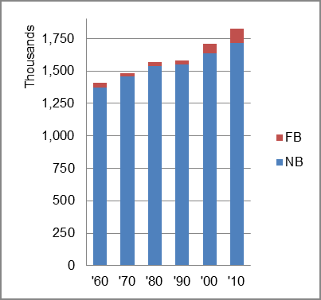

The foreign-born (FB) population increased from 40,238 in 1960 to 112,178 in 2010. That was an increase of 178.8 percent. The foreign-born share changed from 2.9 percent to 6.1 percent.
The share of the overall population that was native-born (NB) increased by 25.0 percent.
Nebraska: Population 1960-2010 
The first chart below shows the three population change factors for three periods adjusted for annual average amounts. Natural change (B-D) was the primary factor in population increase for all periods. NDM was negative in all periods.
The second chart shows the same data but with an adjustment to reflect births to immigrants shifted to NIM. In it, B-D remained the primary factor adding population.
Nebraska: Sources of Population Change 1990-2013 Nebraska: Sources of Population Change (Adjusted) 1990-2013
B-D NDM NIM B-D NDM NIM 90-'99 83.7% neg. 16.3% 90-'99 75.6% neg. 24.4% 00-'09 76.2% neg. 23.8% 00-'09 71.2% neg. 28.8% 10-'13 77.5% neg. 22.5% 10-'13 63.0% neg. 37.0%